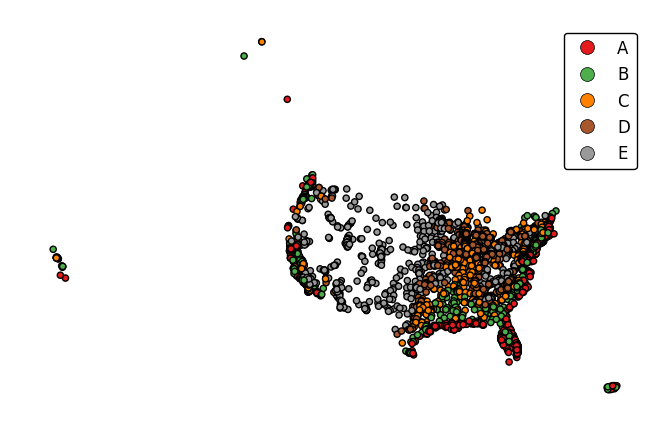
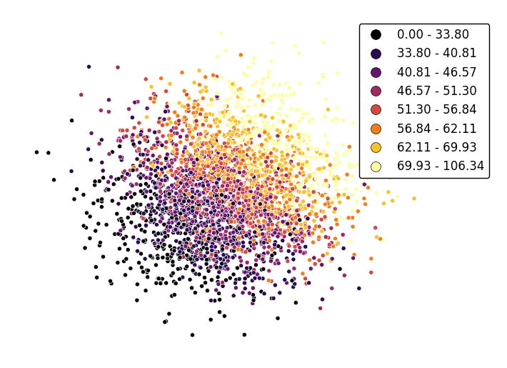
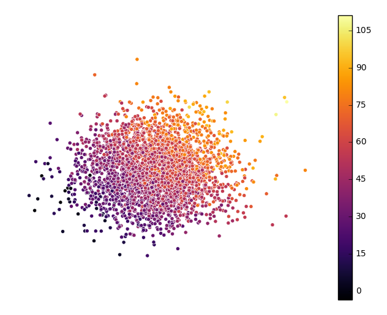
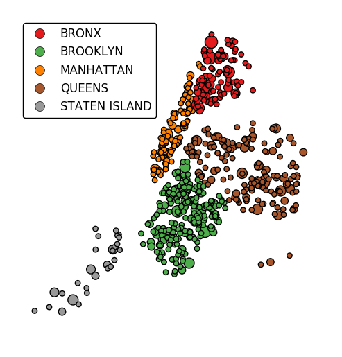

geoplot.pointplot¶
-
geoplot.pointplot(df, projection=None, hue=None, categorical=False, scheme=None, k=5, cmap='Set1', vmin=None, vmax=None, scale=None, limits=(0.5, 2), scale_func=None, legend=False, legend_values=None, legend_labels=None, legend_kwargs=None, legend_var=None, figsize=(8, 6), extent=None, ax=None, **kwargs)¶ A geospatial scatter plot. The simplest useful plot type available.
Parameters: - df (GeoDataFrame) – The data being plotted.
- projection (geoplot.crs object instance, optional) – A geographic projection. Must be an instance of an object in the
geoplot.crsmodule, e.g.geoplot.crs.PlateCarree(). This parameter is optional: if left unspecified, a pure unprojectedmatplotlibobject will be returned. For more information refer to the tutorial page on projections. - hue (None, Series, GeoSeries, iterable, or str, optional) – A data column whose values are to be colorized. Defaults to None, in which case no colormap will be applied.
- categorical (boolean, optional) – Specify this variable to be
Trueifhuepoints to a categorical variable. Defaults to False. Ignored ifhueis set to None or not specified. - scheme (None or {"Quantiles"|"Equal_interval"|"Fisher_Jenks"}, optional) – The scheme which will be used to determine categorical bins for the
huechoropleth. Ifhueis left unspecified or set to None this variable is ignored. - k (int or None, optional) – If
hueis specified andcategoricalis False, this number, set to 5 by default, will determine how many bins will exist in the output visualization. Ifhueis specified and this variable is set toNone, a continuous colormap will be used. Ifhueis left unspecified or set to None this variable is ignored. - cmap (matplotlib color, optional) – The matplotlib colormap to be applied to this dataset (ref). This parameter is ignored if
hueis not specified. - vmin (float, optional) – The value that “bottoms out” the colormap. Data column entries whose value is below this level will be colored the same threshold value. Defaults to the minimum value in the dataset.
- vmax (float, optional) – The value that “tops out” the colormap. Data column entries whose value is above this level will be colored the same threshold value. Defaults to the maximum value in the dataset.
- scale (str or iterable, optional) – A data column whose values will be used to scale the points. Defaults to None, in which case no scaling will be applied.
- limits ((min, max) tuple, optional) – The minimum and maximum limits against which the shape will be scaled. Ignored if
scaleis not specified. - scale_func (ufunc, optional) – The function used to scale point sizes. This should be a factory function of two variables, the minimum and maximum values in the dataset, which returns a scaling function which will be applied to the rest of the data. Defaults to a linear scale. A demo is available in the example gallery.
- legend (boolean, optional) – Whether or not to include a legend in the output plot. This parameter will not work if neither
huenorscaleis unspecified. - legend_values (list, optional) – Equal intervals will be used for the “points” in the legend by default. However, particularly if your scale is non-linear, oftentimes this isn’t what you want. If this variable is provided as well, the values included in the input will be used by the legend instead.
- legend_labels (list, optional) – If a legend is specified, this parameter can be used to control what names will be attached to the values.
- legend_var ("hue" or "scale", optional) – The name of the visual variable for which a legend will be displayed. Does nothing if
legendis False or multiple variables aren’t used simultaneously. - legend_kwargs (dict, optional) –
Keyword arguments to be passed to the underlying
matplotlib.pyplot.legendinstance (ref). - extent (None or (minx, maxx, miny, maxy), optional) – If this parameter is unset
geoplotwill calculate the plot limits. If an extrema tuple is passed, that input will be used instead. - figsize (tuple, optional) – An (x, y) tuple passed to
matplotlib.figurewhich sets the size, in inches, of the resultant plot. Defaults to (8, 6), thematplotlibdefault global. - ax (AxesSubplot or GeoAxesSubplot instance, optional) – A
matplotlib.axes.AxesSubplotorcartopy.mpl.geoaxes.GeoAxesSubplotinstance onto which this plot will be graphed. If this parameter is left undefined a new axis will be created and used instead. - kwargs (dict, optional) –
Keyword arguments to be passed to the underlying
matplotlib.pyplot.scatterinstance (ref).
Returns: The axis object with the plot on it.
Return type: AxesSubplot or GeoAxesSubplot instance
Examples
The
pointplotis a simple geospatial scatter plot, with each point corresponding with one observation in your dataset. The expected input is ageopandasGeoDataFramewith geometries consisting ofshapely.geometry.Pointentities. The simplest possible plot can be made by specifying the input data (and, optionally, a projection).import geoplot as gplt import geoplot.crs as gcrs gplt.pointplot(points)

The
hueparameter accepts a data column and applies a colormap to the output.gplt.pointplot(cities, projection=gcrs.AlbersEqualArea(), hue='ELEV_IN_FT')

The
legendparameter toggles a legend.gplt.pointplot(cities, projection=gcrs.AlbersEqualArea(), hue='ELEV_IN_FT', legend=True)

legend_labelsspecifies custom legend labels.gplt.pointplot(cities, projection=gcrs.AlbersEqualArea(), hue='ELEV_IN_FT', legend=True, legend_labels=list('ABCDE'))
pointplotwill default to binning the observations in the given data column into five ordinal classes containing equal numbers of observations - a quantile scheme. An alternative binning scheme can be specified using theschemeparameter. Valid options areQuantile,Equal_interval(bins will be of equal sizes but contain different numbers of observations), andFisher_jenks(an intermediate between the two).gplt.pointplot(cities, projection=gcrs.AlbersEqualArea(), hue='ELEV_IN_FT', legend=True, scheme='equal_interval')

If the variable of interest is already categorical, specify
categorical=Trueto use the labels in your dataset directly.gplt.pointplot(collisions, projection=gcrs.AlbersEqualArea(), hue='BOROUGH', legend=True, categorical=True)

Keyword arguments can be passed to the legend using the
legend_kwargsargument. These arguments will be passed to the underlyingmatplotlib.legend.Legendinstance (ref). Thelocandbbox_to_anchorparameters are particularly useful for positioning the legend.gplt.pointplot(collisions, projection=gcrs.AlbersEqualArea(), hue='BOROUGH', categorical=True, legend=True, legend_kwargs={'loc': 'upper left'})

Additional arguments will be interpreted as keyword arguments to the underlying
matplotlib.pyplot.scatterinstance (ref).gplt.pointplot(collisions[collisions['BOROUGH'].notnull()], projection=gcrs.AlbersEqualArea(), hue='BOROUGH', categorical=True, legend=True, legend_kwargs={'loc': 'upper left'}, edgecolor='white', linewidth=0.5)

Change the number of bins by specifying an alternative
kvalue.gplt.pointplot(data, projection=gcrs.AlbersEqualArea(), hue='var', k=8, edgecolor='white', linewidth=0.5, legend=True, legend_kwargs={'bbox_to_anchor': (1.25, 1.0)})

Adjust the colormap to any colormap recognizable to
matplotlibusing thecmapparameter.gplt.pointplot(data, projection=gcrs.AlbersEqualArea(), hue='var', cmap='inferno', k=8, edgecolor='white', linewidth=0.5, legend=True, legend_kwargs={'bbox_to_anchor': (1.25, 1.0)})
To use a continuous colormap, explicitly specify
k=None. Note that iflegend=True, amatplotlib.colorbarlegend will be used (ref).gplt.pointplot(data, projection=gcrs.AlbersEqualArea(), hue='var', cmap='inferno', k=None, edgecolor='white', linewidth=0.5, legend=True, legend_kwargs={'bbox_to_anchor': (1.25, 1.0)})
scaleprovides an alternative or additional visual variable.gplt.pointplot(collisions, projection=gcrs.AlbersEqualArea(), scale='NUMBER OF PERSONS INJURED', legend=True, legend_kwargs={'loc': 'upper left'})

The limits can be adjusted to fit your data using the
limitsparameter.gplt.pointplot(collisions, projection=gcrs.AlbersEqualArea(), scale='NUMBER OF PERSONS INJURED', limits=(0, 10), legend=True, legend_kwargs={'loc': 'upper left'})

The default scaling function is linear: an observations at the midpoint of two others will be exactly midway between them in size. To specify an alternative scaling function, use the
scale_funcparameter. This should be a factory function of two variables which, when given the maximum and minimum of the dataset, returns a scaling function which will be applied to the rest of the data. A demo is available in the example gallery.def trivial_scale(minval, maxval): def scalar(val): return 2 return scalar gplt.pointplot(collisions, projection=gcrs.AlbersEqualArea(), scale='NUMBER OF PERSONS INJURED', scale_func=trivial_scale, legend=True, legend_kwargs={'loc': 'upper left'})

hueandscalecan co-exist.gplt.pointplot(collisions[collisions['BOROUGH'].notnull()], projection=gcrs.AlbersEqualArea(), hue='BOROUGH', categorical=True, scale='NUMBER OF PERSONS INJURED', limits=(0, 10), legend=True, legend_kwargs={'loc': 'upper left'})
In case more than one visual variable is used, control which one appears in the legend using
legend_var.gplt.pointplot(collisions[collisions['BOROUGH'].notnull()], projection=gcrs.AlbersEqualArea(), hue='BOROUGH', categorical=True, scale='NUMBER OF PERSONS INJURED', limits=(0, 10), legend=True, legend_kwargs={'loc': 'upper left'}, legend_var='scale')